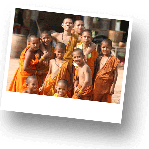
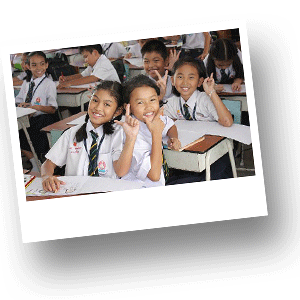

Обазование в Таиланде
В течение почти шести веков существовало только два вида обучения:
1) Образование, получаемое при дворце принцами и детьми знати. Система образования при дворце давала больший объем знаний, по сравнению со школам при монастырях. Несмотря на это, она являлась весьма консервативной и практически не менялась в течение нескольких веков.

2) Образование для простолюдинов. Его получали в буддийских монастырях («ватах»), которые играли в тот период роль основных центров общественной жизни. Они являлись и школой, и больницей, и местом проведения праздников. В монастыре ребенок с раннего детства приобщался к религии, получал первые знания о мире. Именно там детей обучали читать.
В 1887 г. был создан департамент образования, который пять лет спустя был объединен с департаментом религии и был преобразован в министерство образования. В страну были приглашены иностранные советники и учителя, большей частью англичане, которые приняли участие в разработке национальной программы просвещения, взяв за образец английскую систему образования. Было решено ввести повсеместное начальное обучение на тайском языке. В учебные планы были включены новые дисциплины: грамматика, география, алгебра, геометрия и естественные науки.
В 1913 г. впервые в стране появились отпечатанные тексты учебников и словарей. На тайский язык переводились английские книги и учебная литература. Центром распространения начального и среднего образования была столица страны - город Бангкок. Уровень знаний, который получали в это время учащиеся в некоторых столичных школах, мало чем отличался от европейских стандартов. Реорганизация системы образования обеспечила необходимые условия для создания средних специальных и высших учебных заведений.

Для осуществления реформы просвещения и повсеместного распространения образования необходимо было создавать новые педагогические кадры, которые смогли бы заменить монахов. Учителей готовили государственные средние школы в Бангкоке и в некоторых провинциальных центрах. Одновременно открывались и частные педагогические колледжи. Во всех учебных заведениях преподавание велось по разработанной специально программе министерством образования. В них широко использовались иностранные специалисты, которые внесли значительный вклад в развитие системы среднего образования в Тиланде.
Несмотря на расширение сети педагогических учебных заведений и создание национальных педагогических кадров, в стране постоянно ощущалась нехватка учителей начальных и средних школ. Это объяснялось, как недостатками в организации педагогического образования, так и низким уровнем оплаты учителей.
Молодежь, оканчивавшая светские средние школы и педагогические учебные заведения, предпочитала идти на службу в государственный аппарат. Большинство дипломированных учителей работали в средних школах, а в сельской местности преподавали лица, не прошедшие специальной педагогической подготовки или окончившие неполную среднюю школу. Чтобы привлечь молодежь к педагогической деятельности и, тем самым, уменьшить нехватку в учителях, которая была особенно ощутима в провинциальных центрах и деревнях, в начале XX в. была увеличена оплата учителей. Провинциальным студентам, которые соглашались после окончания учебы возвратиться в родные места, предоставлялась стипендия.
В 1921 г. был принят закон "О всеобщем начальном обучении". Первая программа государственного образования была принята в 1932 г.
Начиная с 60-х годов административная структура системы образования подвергалась частым реорганизациям.
Современная система государственного образования включает четыре уровня:
1–2 года дошкольного образования;
6 лет обязательного начального образования; 6 лет среднего образования, которое имеет две ступени.
Уровень грамотности в Таиланде – 93%. Это один из самых высоких показателей в регионе Юго-Восточной Азии, третий после Южной Кореи и Гонконга. Начальное образование практически всеобщее. Начальное образование обязательное и бесплатное, но некоторые расходы имеются. Иногда невозможность родителей покрывать расходы на форму, учебники и транспорт вынуждают некоторых детей бросать школу. Среднее образование тоже поддерживается государством, но эта ступень обучения необязательна и родителям обходится дороже, поэтому количество учащихся здесь намного меньше, чем в начальной школе.
В высшие учебные заведения поступает 14% (значительно выше, чем в других странах), но большая часть – в профессиональные школы, а не в университеты. Менее 20% выпускников ВУЗов специализируются в науке и технике (вСингапуре – более 50%).
В конце 70-х годов появилась острая необходимость в проведении очередной реформы системы национального образования, которая была осуществлена под руководством национального правительства Таиланда в 1980-1990-х гг.
После целого ряда подготовительных работ в 1999 г. был принят Акт "О национальном образовании", который документально оформил программу реформы. Этот документ должен был охватить все аспекты образования и определить долгосрочную программу развития данной сферы.
В основу Акта "О национальном образовании" было положено 3 базовых принципа:
1) Дать возможность каждому гражданину страны учиться в течение всей жизни,
2) Обеспечить участие всех социальных групп в процессе образования,
3) Последовательно развивать и расширять знания населения.
С каждым годом увеличивается число учеников, обучающихся в средней школе. Растет количество средних образовательных учебных учреждений. Однако в 2000 г. 35% детей в возрасте 12-17 лет все еще не были охвачены системой среднего образования. По-прежнему, весьма высоким остается процент отчисления из средних учебных заведений, а также количество остающихся на второй год.
Несмотря на большие успехи в данной области, правительству предстоит увеличить число средних школ, открывая их даже в удаленных районах страны, а также повысить качество среднего образования.
Важной проблемой остается вопрос о расширении сети профессионально-технических учебных заведений и улучшении качества подготовки их выпускников. В связи с тем, что система образования Таиланда традиционно имела гуманитарную направленность, в настоящее время необходимо улучшить качество преподавания естественных и математических наук, а также готовить более квалифицированных специалистов в технических отраслях, т.к. именно в них остро нуждается национальная экономика.